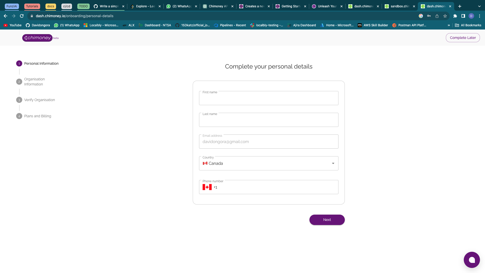
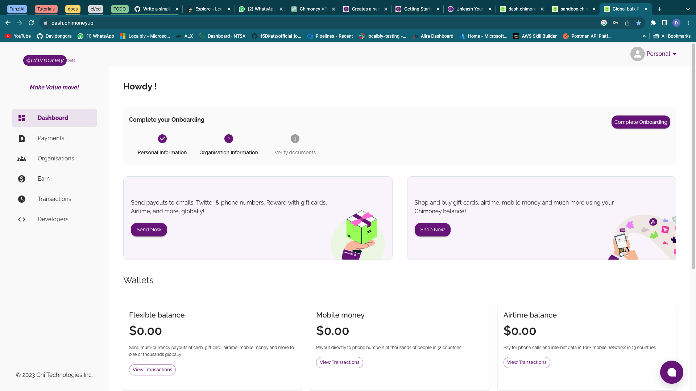
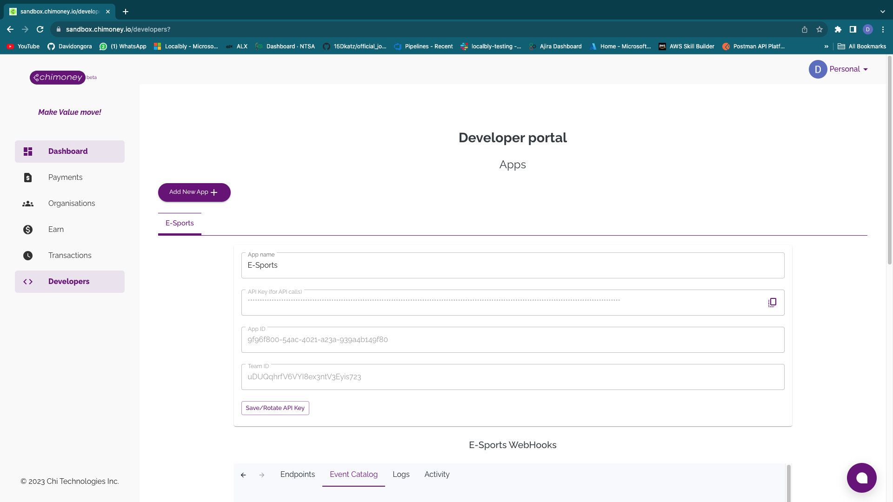
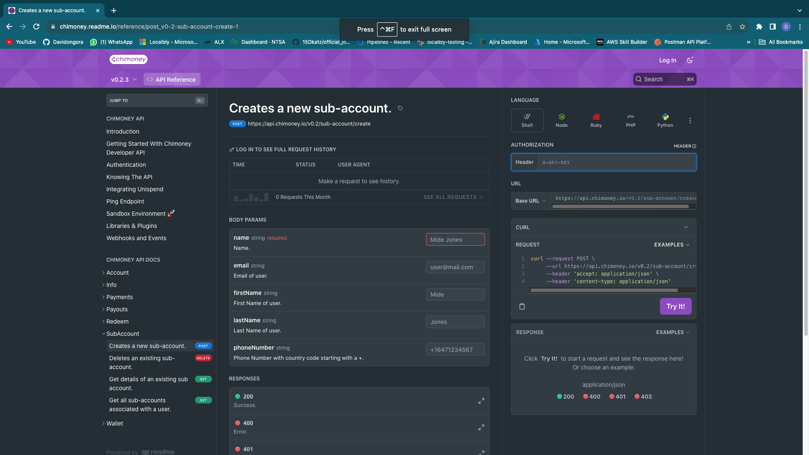
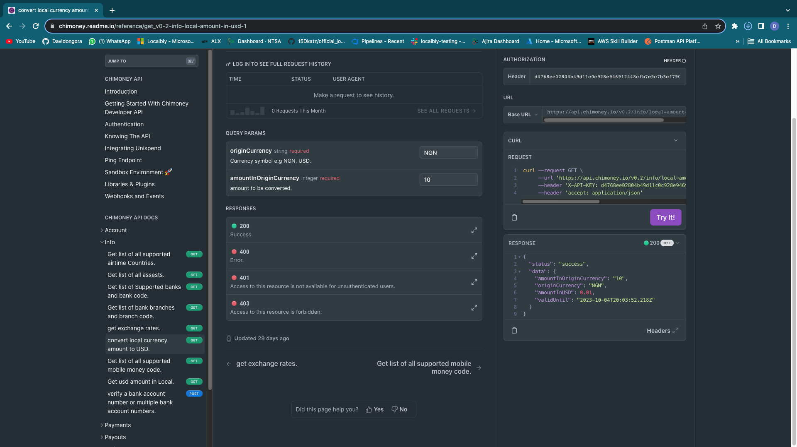

Chimoney is an Automated Global Payouts Platform. The Chimoney API is designed for developers and companies, facilitating platform users to redeem airtime, cash, and more through the API. Additionally, the Chimoney API offers payout functionalities for banks, airtime, mobile money (momo), gift cards, and other services. Chimoney's Developer API empower businesses with a robust API platform for seamless integration of payment functionalities, enabling them to unlock global payment capabilities and enhance their financial operations.
for one to get started with the chimoney api one needs to create a developer account in order to access the apis and the developer portal which contains of the sandbox which allows one to test the apis it also has documentation, Documentation that guide the users on how to get started.
create an account on this link create account

fill all the personal information then head on and fill the organisation information and also verify your organisation and personal details. you will be asked to provide either your national id or passport you can skip this part if you are a student and still doesnot have any of them
Then you will be directed to this page where you will have tabs like the dashboard, payments, organisations, earn, transcations and the developers tab
 To create a developer portal click the developer pane of the side navigation bar Developer portal Then add a new application and give your application a name and an api key will be generated. the api key is to be used in the authorization part with the key as Header and the api key as the value
Overview of Developer Portal:Inside the developer portal, you'll find comprehensive documentation and guides that provide insights into using the API effectively. These resources empower developers, including beginners, to navigate through the integration process seamlessly. Enhanced Security and Authentication: Introduction to chimoney API
Endpoints give access to Powerful Features:endpoints unlocks access to a suite of powerful API provided by Chimoney. These API endpoints offer functionalities crucial for a wide range of applications, from financial transactions to data retrieval.
significance of the sandbox for testing APIs in a safe environment.
Real-time Testing and Integration:
the sandbox is a vital tool for developers, providing a secure, controlled, and controlled environment for testing API. It ensures that developers can validate their integration code, understand API behavior, and develop robust applications without any impact on real user data or transactions. This is instrumental in building reliable and high-quality applications that deliver value to end-users.
With a developer account, you gain the ability to test API in real-time using the sandbox environment provided in the developer portal. This allows you to understand API behavior, fine-tune integration, and ensure smooth functionality. Tailored Solutions: Access the Sandbox and test your api endpoints  Knowing the API you can explore the API Chimoney offers and identify the ones that align with your specific application needs. This allows you to tailor your integration for optimal results.Integration Guides and Documentation:
getting started with the apiAccount
The api endpoints are self explanatory they tell the user what they are used
for eg the "get list of all supported airtime Countries" this will return the
countrues that are airtime supported this uses the POST method except for the
DELETE which uses a delete method
Get transaction details by issueID.
Get all transactions by account.
Get single transaction detail.
Account Transfer.
Deletes an unpaid transaction.
Info : uses GET method except for the one of verify bank account which is uses a post method
Endpoints:Get list of all supported airtime Countries.
Get list of all assests.
Get list of Supported banks and bank code.
Get list of bank branches and branch code.
get exchange rates.
convert local currency amount to USD.
sample snippet of api response in the sandbox
Get list of all supported mobile money code.
Get usd amount in Local.
verify a bank account number or multiple bank account numbers. method- POST https://api.chimoney.io/v0.2/info/verify-bank-account-number
Payments
Endpoints:
Initiate a payment request
verify a payment.
Simulate a card or other status change. Accepted include ["failed", "expired", "fraud"]. Only works in staging
method: POST
Payout airtime. https://api.chimoney.io/v0.2/payouts/airtime
Payout bank.
Payout chimoney.
Payout to Chimoney Wallet.
Payout giftcards.
Payout mobile-money.
Check out payout status.
Initiate chimoney.
method: POST
Endpoints:
Redeem airtime.
Redeem any.
Redeem Chimoney.
Redeem giftcard.
Redeem mobile money.
Creates a new sub-account. POST
Deletes an existing sub-account. DELETE
Get details of an existing sub account. GET
Get all sub-accounts associated with a user. GET
method: POST
List associated wallets.
Get single wallet details.
Transfer between wallets.